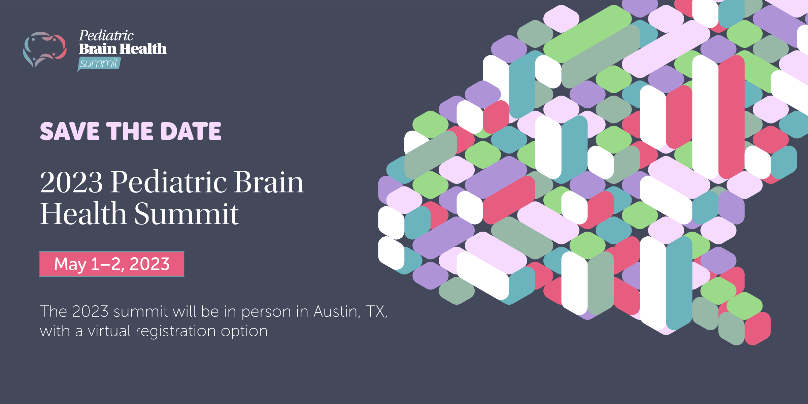

The 2023 summit will be in person in Austin, TX, with a virtual registration option.
The event – which is free to attend – is part of the Texas Pediatric Brain Health Initiative. This initiative is a multi-sector, multi-agency collaboration focused on the prenatal to three-year-old developmental window. The purpose of the initiative is to use the current science on pediatric brain development to help inform and support programs that promote community resilience and optimal development in Texas’ children.
The Pediatric Brain Health Summit is part of the pediatric brain health initiative, a multi-sector, multi-agency collaboration focused on the prenatal to three-year-old developmental window. The purpose of the initiative is to use the current science on pediatric brain development to help inform and support programs that promote community resilience and optimal development in Texas’ children.